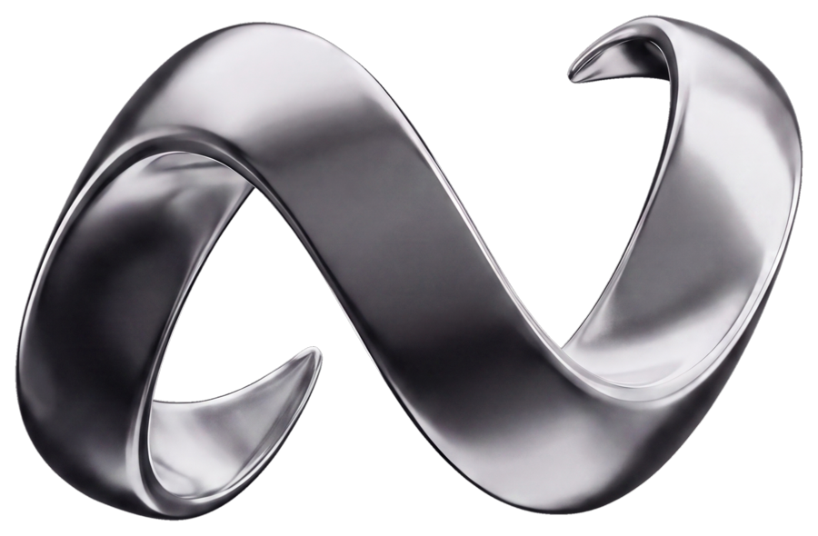

WaveHubAngaben gemäß § 5 ECG, § 14 UGB und § 25 MedienG.
[Firmenname / Vor- und Nachname]
[Rechtsform, z. B. Einzelunternehmen / GmbH]
[Straße und Hausnummer]
[PLZ Ort], Österreich
E-Mail: markus.prenner@gmx.at [oder support@wavehubtennis.com]
Telefon: [optional]
Betrieb der Online-Plattform „WaveHub" — kostenpflichtiger Zugang zu redaktionellen Tennis-Analysen, Statistiken und Value-Einschätzungen (ATP). WaveHub ist kein Buchmacher, vermittelt keine Wetten und gibt keine Gewinngarantie.
Die Europäische Kommission stellt eine Plattform zur Online-Streitbeilegung (OS) bereit: ec.europa.eu/consumers/odr. Wir sind nicht verpflichtet und nicht bereit, an Streitbeilegungsverfahren vor einer Verbraucherschlichtungsstelle teilzunehmen. [ggf. anpassen]
Die Inhalte wurden mit größtmöglicher Sorgfalt erstellt, für Richtigkeit, Vollständigkeit und Aktualität wird jedoch keine Gewähr übernommen. Für Inhalte externer Links ist ausschließlich deren Betreiber verantwortlich.
Alle Inhalte dieser Website (Texte, Grafiken, Logo, Analysen) sind urheberrechtlich geschützt. Jede Verwertung außerhalb der Grenzen des Urheberrechts bedarf der schriftlichen Zustimmung.
← Zurück zu WaveHub